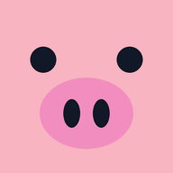

Loading audio files...

Pig Game Track App 🐖🐖
Version
Music for every phase of the game, plus sound effects. Install it to play offline.
Offline library
Checking what is saved…
⚠️ Large download. Use Wi-Fi; it resumes if interrupted.
0 / 0 files
Share
Delete app
Removes its offline music, caches and settings from this device.